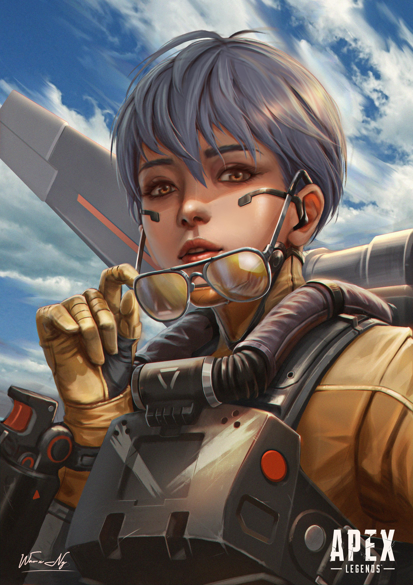
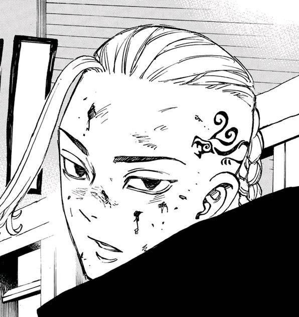

Esta noche oscura Te tortura la locura Procura estar a mi altura Aunque es baja tu estatura Tartamudas ante el miedo Que genero en el momento Que aparezco entre las sombras Y en tu mente me conecto Ven victima mía Siente mi presencia No luches por tu vida Y se parte de mi esencia Con decencia me escabullo Y aparezco detrás tuyo Huye todo lo que quieras Porque yo siempre te escucho ¿Tú eres jeff the killer? Tu vida pende de un hilo Mientras te cortas la cara Yo te agarro y te aniquilo Has requerido Ser traumado para ser un asesino Cuando yo toda mi vida Miles de almas he obtenido Soy slenderman Y puedo cambiar de forma Te conformas si te digo Que tu cara es espantosa Llevo la maldad Y la expando a tu alrededor No requiero fuego y cúter Para causarte terror Tu siempre me vigilas Creo que primero Unos ojos necesitas Veo que has notado Que soy sumamente guapo Pero no me envidies Tú eres eh ¿alto? Voy a ser sincero No quiero esta riña No voy a batallar con un Flaco que roba niñas Eres tan malvado Eres tan entomófilo Espera la palabra que busco Es pedofilo! Crees que esos tentáculos Te hacen aterrador Pokebola ve te elijo A ti bulbazor Supongo que jamás Rosaste el filo de la muerte Mala suerte la tuya El placer es excelente Necesito un cuchillo Y mucha gente ejecutar Mientras tu esperas En el bosque pa' niños asustar Colocando notitas Con dibujos sin un fin Ja solo te diré Go to sleep!